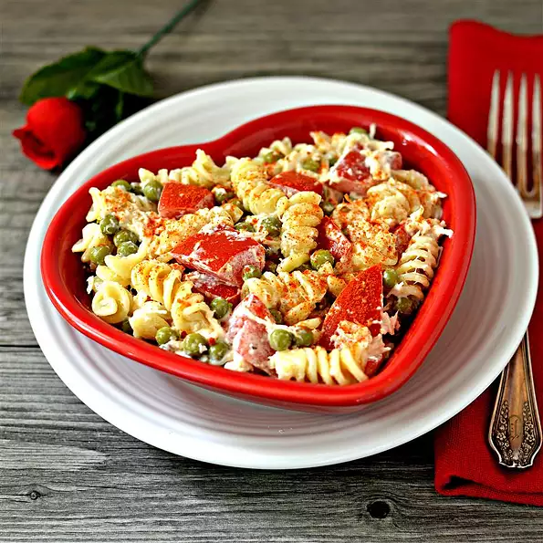

Chicken pasta

Description:
This is the recipe for best chicken pasta.
You should try it out ! :)
Ingredients:
- 1 package rotini pasta
- 1 cup fat-free mayonnaise
- 1 teaspoon lemon pepper seasoning
- Half teaspoon dried mustard
- 24 cherry tomatoes, halved
- 1 can peas, drained
- 2 cans chicken packed in water, drained
- 1 picnh of paprika
Steps:
-
Bring a large pot of lightly salted water to a boil; cook rotini at a boil
until tender yet firm to the bite, about 8 minutes. Drain and rinse with
cold water.
-
Mix mayonnaise, lemon pepper seasoning, and dried mustard together in a
large bowl. Mix in cherry tomatoes, peas, and chicken. Fold in rotini.
Sprinkle paprika over salad before serving.